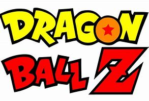

Dragon Ball es una serie de anime y manga creada por Akira Toriyama, que sigue las aventuras de Goku, un guerrero saiyajin, desde su infancia hasta su vida adulta. La historia combina acción, artes marciales, y comedia, mientras Goku y sus amigos luchan contra enemigos poderosos y buscan las legendarias esferas del dragón, capaces de conceder cualquier deseo. Con personajes icónicos como Vegeta, Piccolo, y Bulma, la serie se ha convertido en un referente cultural en el género de acción y aventura y ha sido muy influyente a nivel mundial.
Anime, Acción, Aventura, Comedia